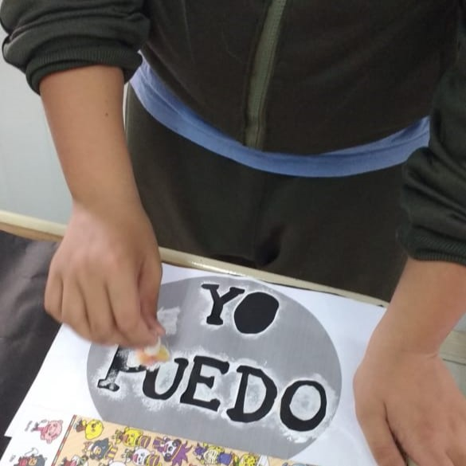
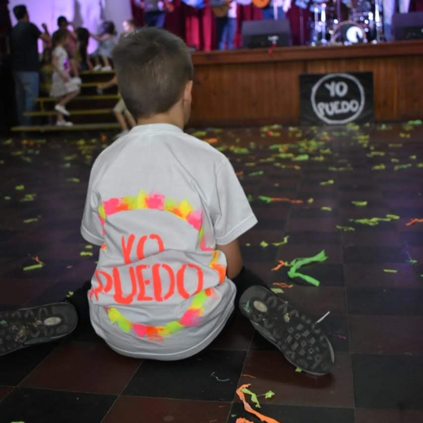
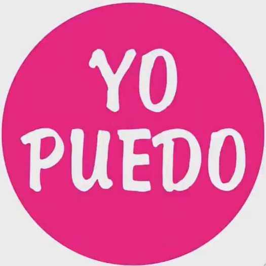
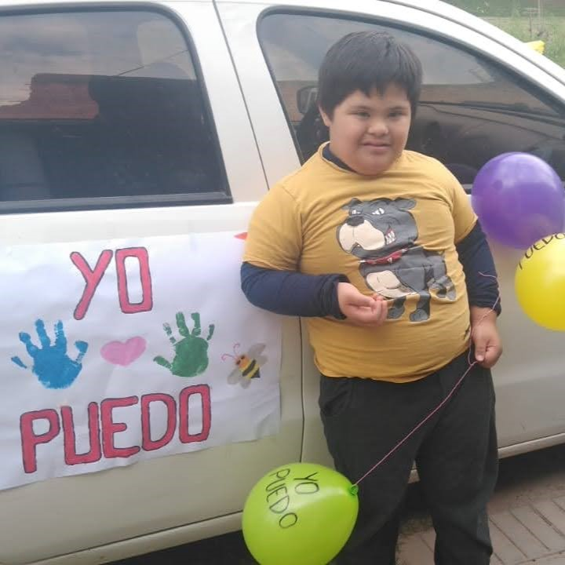

A travéz del tiempo
2017



2019


2020





2021


2022
2023

Desde hace mucho tiempo el mes de Octubre, que denominamos “Mes de la Inclusión”, cobra un significado muy importante en la Escuela de Educación Integral N°11, tornándose de color y alegría.
Hace tiempo atrás este mes se denominaba de otras maneras y desde la escuela, año a año, se elegía un lema que representará lo que se buscaba transmitir a la comunidad. En Octubre de 2017 aparece por primera vez el lema “Yo Puedo” y se realiza un logo representativo del mismo (de forma circular, con fondo negro y letras blancas). En el año 2018 se eligió otro lema, como era habitual; luego, en el 2019 se evaluó la repercusión que había tenido el “Yo puedo”, su versatilidad, lo significativo que resulta y el impacto que produce.
Por todo esto es que a partir de Octubre de 2019 se decide establecer el “Yo Puedo” como lema oficial del Mes de la Inclusión, manteniendo su diseño y tipografía. En los años posteriores fueron variando los colores de fondo del logo, así como las intervenciones que se realizaron a través del mismo, conservando el propósito de visibilizarlo en la sociedad, haciendo partícipes a los estudiantes, sus familias, otras instituciones y toda la comunidad.
Viernes 4 de Ocutubre 10:00hs en Plaza Sarmiento.
Descubrimiento del "Yo Puedo" intervenido por el artista crespense Nahuel Salcedo.
Viernes 11 de Octubre 21:00hs Salón Parroquia "San José".
Anticipadas en venta.
Miércoles 16 de Octubre 09:30hs EPEI N°11
Propuesta a cargo de Formación Laboral Ocupacional -Panadería- y Orientación Vocacional Ocupacional de 10:30 hs a 13:00hs en Plaza Sarmiento
(Tocá la imágen!)
Es un desafío continuo, constante, cotidiano... Que nos enfrenta a todos a reconocer nuestras limitaciones y a superarnos apostando a creer en nosotros mismos!!!.
Yo puedo creer, crecer, construir, crear, trabajar, esmerandome para mi futuro y presente acompañado o solo, confiando en que Yo Puedo todo lo que me proponga.
Es ofrecer oportunidades, generar herramientas, afrontar desafíos, expresar emociones, demostrar que somos capaces.